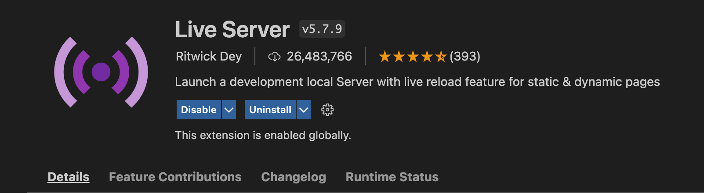

PART 1
Visual Studio Code
Your Code Editor for the Course
-
In order to write code in our class, we are going to download and install a widely used editor called Visual Studio Code Editor.
Visit the following link and click the big blue "Download" button on the following page:

Click the Download button on the Visual Code download site -
Once your software downloads, unzip and drag it to your Applications folder, making it easier to find in your launchpad.

Move Visual Studio Code from Downloads to Applications -
Go ahead and open up Visual Studio Code once you have it installed. It should resemble the screenshot on the right.

Screenshot of what Visual Studio Code looks like when opened -
Now that we have installed the main code editor we will be utilizing throughout class, now we're going to install a few extensions that we will need for viewing the live renders of our code.
First, navigate to the left side panel in Visual Studio Code and click the icon with the four boxes.
Then, in the Extensions tab, click in the search bar at the top.
Navigating to the Extensions tab and the search bar inside In the search bar, type "live preview".
The extension "Live Preview" by Microsoft should be one of the first in the list. Click the Install button to install the extension
This extension will allow you to preview your HTML/CSS/Javascript code within Visual Studio.

A screenshot of the Live Preview extension In the Extensions tab, click in the search bar at the top. Then in the search bar, type "live server".
The extension Live Server by Ritwick Dey should be one of the first in the list. Click the Install button to install the extension
This extension will allow you to preview your HTML/CSS/Javascript code live in a web browser like Google Chrome.
A screenshot of the Live Server extension